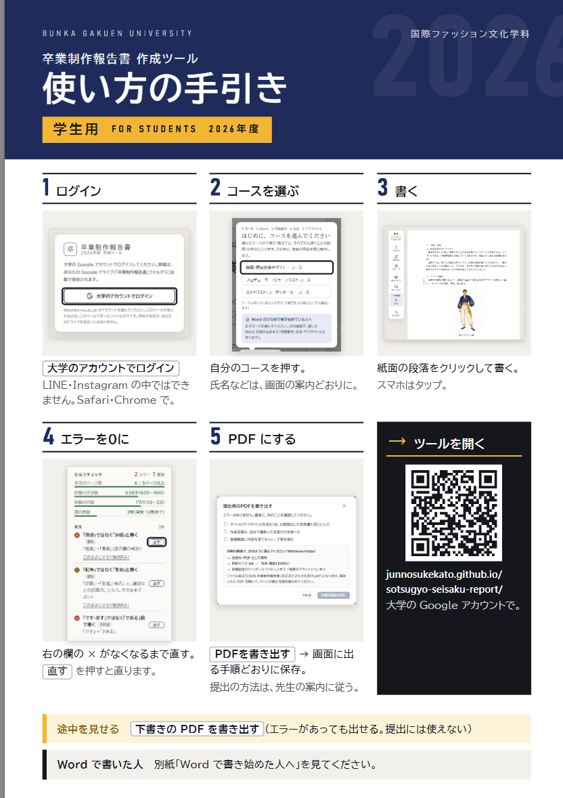
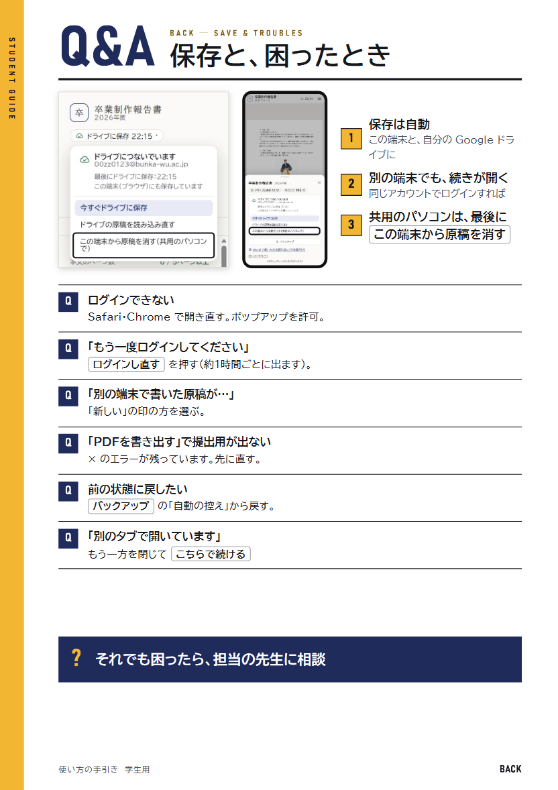
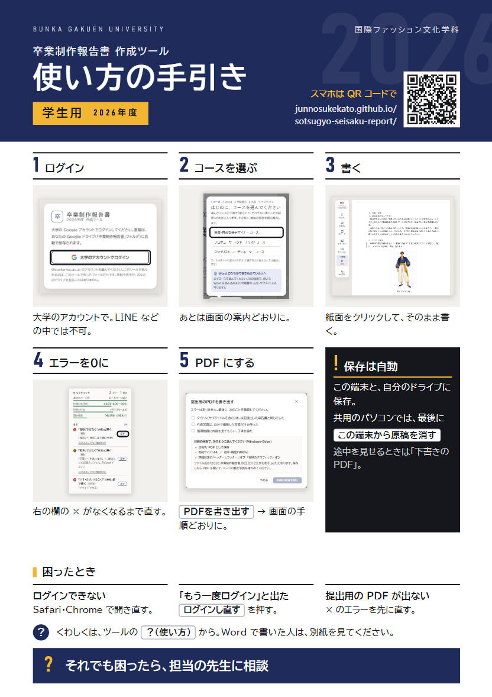

今の手引き：4ページ、ページごとの文字数 320・726・907・760字。どの案も、本文の文字は 10.5pt 以上・1つの項目は2行（40字ほど）まで。画面の写真は本番と同じもの。
表：はじめてから提出までの5つの手順（写真つき）と URL・QR。裏：保存（共用のパソコン）と困ったとき6つ、先生に相談


1ページに URL・QR、5つの手順（1行ずつ・小さな写真）、保存と共用のパソコン、困ったとき3つ、先生に相談
ヘルプができたら：ツールに「？（使い方）」の欄と、はじめて開いたときの案内（指さしのツアー）を足す前提の案です。紙から外した説明（端末ごとの PDF の保存のしかた、別の端末・2つのタブ・控えから戻すなどの困ったとき、セルフチェックの見方、抄録の許可、図・表の入れ方）は、その「？」の中に入れます。
